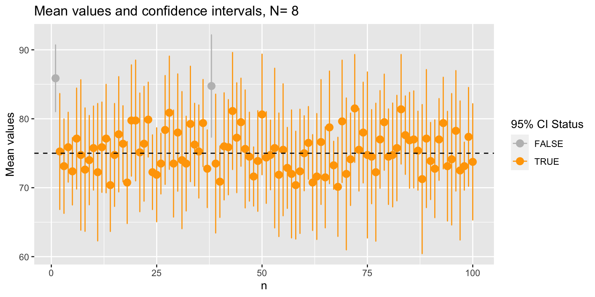
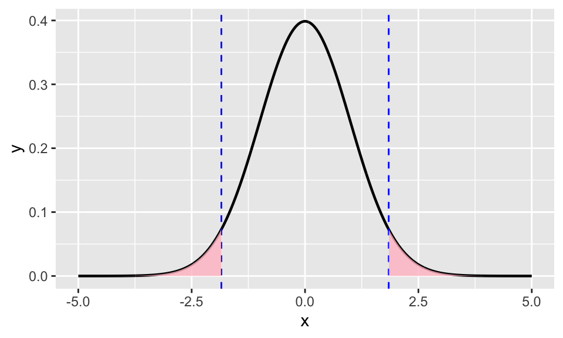

4 WEEK 1: Hypothesis testing
On this section, we will go through hypothesis testing. You will start to see how to formulate hypotheses and how to test them. In addition, we want to learn how to use and interpret hypothesis tests.
We will work again with the diabetes dataset that we used previously.
dat = read.delim('https://tinyurl.com/y4fark9g')
# set the row names using the column id
rownames(dat) = dat$idLoad the required packages
Check out the content of the dataset using the summary function
## id chol stab.glu hdl
## Min. : 1000 Min. : 78.0 Min. : 48.0 Min. : 12.00
## 1st Qu.: 4792 1st Qu.:179.0 1st Qu.: 81.0 1st Qu.: 38.00
## Median :15766 Median :204.0 Median : 89.0 Median : 46.00
## Mean :15978 Mean :207.8 Mean :106.7 Mean : 50.45
## 3rd Qu.:20336 3rd Qu.:230.0 3rd Qu.:106.0 3rd Qu.: 59.00
## Max. :41756 Max. :443.0 Max. :385.0 Max. :120.00
## NA's :1 NA's :1
## ratio glyhb location age
## Min. : 1.500 Min. : 2.68 Length:403 Min. :19.00
## 1st Qu.: 3.200 1st Qu.: 4.38 Class :character 1st Qu.:34.00
## Median : 4.200 Median : 4.84 Mode :character Median :45.00
## Mean : 4.522 Mean : 5.59 Mean :46.85
## 3rd Qu.: 5.400 3rd Qu.: 5.60 3rd Qu.:60.00
## Max. :19.300 Max. :16.11 Max. :92.00
## NA's :1 NA's :13
## gender height weight frame
## Length:403 Min. :52.00 Min. : 99.0 Length:403
## Class :character 1st Qu.:63.00 1st Qu.:151.0 Class :character
## Mode :character Median :66.00 Median :172.5 Mode :character
## Mean :66.02 Mean :177.6
## 3rd Qu.:69.00 3rd Qu.:200.0
## Max. :76.00 Max. :325.0
## NA's :5 NA's :1
## bp.1s bp.1d bp.2s bp.2d
## Min. : 90.0 Min. : 48.00 Min. :110.0 Min. : 60.00
## 1st Qu.:121.2 1st Qu.: 75.00 1st Qu.:138.0 1st Qu.: 84.00
## Median :136.0 Median : 82.00 Median :149.0 Median : 92.00
## Mean :136.9 Mean : 83.32 Mean :152.4 Mean : 92.52
## 3rd Qu.:146.8 3rd Qu.: 90.00 3rd Qu.:161.0 3rd Qu.:100.00
## Max. :250.0 Max. :124.00 Max. :238.0 Max. :124.00
## NA's :5 NA's :5 NA's :262 NA's :262
## waist hip time.ppn
## Min. :26.0 Min. :30.00 Min. : 5.0
## 1st Qu.:33.0 1st Qu.:39.00 1st Qu.: 90.0
## Median :37.0 Median :42.00 Median : 240.0
## Mean :37.9 Mean :43.04 Mean : 341.2
## 3rd Qu.:41.0 3rd Qu.:46.00 3rd Qu.: 517.5
## Max. :56.0 Max. :64.00 Max. :1560.0
## NA's :2 NA's :2 NA's :3How can we inspect the differences between the weight of men and women? We can start by ploting two histograms or density plots representing the weight by biological sex.

The distributions look different in shape, right? Where do you think the mean would be located in the plot?
# We can use "filter()" to filter the cholesterol values for men and women
dat.male = dat %>%
filter(gender == 'male')
dat.female = dat %>%
filter(gender == 'female')
# we will calculate the mean weight by sex.
mean.men <- mean(dat.male$weight, na.rm = TRUE)
mean.women <- mean(dat.female$weight, na.rm = TRUE)And we can then add in the means to the plot as vertical lines.
ggplot(dat,
aes(x = weight,
fill = gender)) +
geom_density(alpha = 0.5) +
geom_vline(xintercept = mean.men, colour = "cyan") +
geom_vline(xintercept = mean.women, colour = "salmon")
Do you think that the mean of the male weight is lower than 180? Do you think that the mean of the female weight is really different from the mean of the male weights? Do you think that the mean of the male weight is higher than that of the females?
Now, we want to use a statistical test to check if,
- males have a mean weight that is significantly lower than a specific value (one-sample, one-tailed test)
- there is a significant difference in the mean of the weights between the two groups (two-sample, two-sided test)
- male have a significantly higher mean weight than females (two-sample, one-sided test)
Note the use of the word significant in the previous statements!
This is exactly what mean tests such as the t-test (or the Wilcoxon test) are designed for! We will perform here a t-test.
4.0.1 One sample t-test
Using a one-sample t-test, we can check if values differ significantly from a target value. For example, you could sample 10 chocolate bars, and test if they significantly differ from the expected weight of 100 g:
Should we perform a one- or two-sided test?
bars = c(103,103,97,102.5,100.5,103,101.3,99.5,101,104) # weights of 10 chocolate bars
chocbar.mean = 100 # expected weightThe function t.test() offers three alternative options: two.sided, less and greater.
Here, if we want to test whether the mean weight of the 10 chocolate bars is different from the expected weight of 100 g, we want to perform a two sided test and use the alternative two.sided.
It is essential to clearly formulate the H0 and H1 hypothesis. There are two alternative but equivalent ways to do so. Either:
> H0: the expectation value of the random variable “Weight of a chocolate bar” is equal to 100 g.
> H1: the expectation value of the random variable “Weight of a chocolate bar” is different from 100 g.
or
> H0: the mean weight of a chocolate bar is not significantly different from 100 g.
> H1: the mean weight of a chocolate bar is significantly different from 100 g.
Note the difference between these two formulations, and ask for help if you have questions about this!
##
## One Sample t-test
##
## data: bars
## t = 2.233, df = 9, p-value = 0.05244
## alternative hypothesis: true mean is not equal to 100
## 95 percent confidence interval:
## 99.98067 102.97933
## sample estimates:
## mean of x
## 101.48# equivalent to:
# t.test(bars,mu = chocbar.mean)
# "alternative" is set to "two.sided" per default.
# x is a vector containing the data values
# mu indicates the true value of the mean (here: 100g)How would you interpret this result? Can you reject the H0 hypothesis?
Using alpha = 0.05, the H0 hypothesis can not be rejected as the p-value is 0.05244 (p-value >= 0.05). With alpha = 0.05, the mean weight of the chocolate bars is not significantly different from 100 g.
Using alpha = 0.1, the H0 hypothesis can be rejected (p-value < 0.1). With alpha = 0.1, the mean weight of the chocolate bars is significantly different from 100 g.
BUT … It does not mean that alpha should be chosen with respect to the results of the t.test!!!
Before running a t.test, formulate the null hypothesis H0 and the alternative hypothesis H1 and decide about the alpha value. Remember, alpha represent the false positive rate: under the H0 hypothesis (test of two identical distributions), this is the proportion of tests that will detect a difference between the two groups (p-value < alpha).
Beware not to get confused between one-/two-sample tests, and one-/two-sided tests!
Regarding the mean weight of the males, we would like to check whether males have a mean weight that is significantly lower than 180. Here as well, we will perform a one-sample test, with mu = 180. However, we will perform a one-sided test using the alternative option less.
The hypotheses can be formulated as:
> H0: the expectation value of the random variable “Weight of male patients” is equal or greater 180.
> H1: the expectation value of the random variable “Weight of male patients” is less than 180.
##
## One Sample t-test
##
## data: dat.male$weight
## t = 0.64094, df = 167, p-value = 0.7388
## alternative hypothesis: true mean is less than 180
## 95 percent confidence interval:
## -Inf 186.8629
## sample estimates:
## mean of x
## 181.9167How would you interpret the result with alpha = 0.05? Can you reject the H0 hypothesis?
4.0.2 Two-sample t-test (2-sided)
Now, we will compare the mean of the weights between males and females.
According to the previous histogram, females have a different mean weight as males. This can be tested using a two-sample and two.tailed t.test.
ggplot(dat,
aes(x = weight,
fill = gender)) +
geom_density(alpha = 0.5) +
geom_vline(xintercept = mean.men, colour = "cyan") +
geom_vline(xintercept = mean.women, colour = "salmon")The hypotheses can be formulated as:
> H0: the expectation value of the random variable “Weight of male patients” is equal to the expectation value of the random variable “Weight of female patients”.
> H1: the expectation value of the random variable “Weight of male patients” is different from the expectation value of the random variable “Weight of female patients”.
##
## Welch Two Sample t-test
##
## data: dat.male$weight and dat.female$weight
## t = 1.8453, df = 372.45, p-value = 0.06579
## alternative hypothesis: true difference in means is not equal to 0
## 95 percent confidence interval:
## -0.4875828 15.3465572
## sample estimates:
## mean of x mean of y
## 181.9167 174.4872How would you interpret the result with alpha = 0.05? Can you reject the H0 hypothesis?
4.0.3 Two-sample t-test (1-sided)
Looking at the histogram, other observers could in principle see a difference between the mean values of the weights and formulate the following hypotheses:
> H0: the expectation value of the random variable “Weight of male patients” is equal or lower to the expectation value of the random variable “Weight of female patients”.
> H1: the expectation value of the random variable “Weight of male patients” is higher than the expectation value of the random variable “Weight of female patients”.
##
## Welch Two Sample t-test
##
## data: dat.male$weight and dat.female$weight
## t = 1.8453, df = 372.45, p-value = 0.0329
## alternative hypothesis: true difference in means is greater than 0
## 95 percent confidence interval:
## 0.7903498 Inf
## sample estimates:
## mean of x mean of y
## 181.9167 174.4872How would you interpret the result with alpha = 0.05?
Can you explain why the p-value of the one-tailed t.test is lower than the p-value of the two-tailed t.test? What is the relation between these two values?
# p-value of the two-sided t-test versus p-value of the one-sided t-test:
t.test(dat.male$weight,
dat.female$weight, alternative = "two.sided")$p.value # two-tailed## [1] 0.06579432## [1] 0.03289716This can be visualized using the t-distribution. Here (see above result of the t.test), t = 1.8453 and df = 372.45.
In the one-tailed t.test, the p-value is the area under the curve for t > 1.8453 (alternative greater) OR for t < -1.8453 (alternative less).

In the two-tailed t.test, the p-value is the area under the curve for t > 1.8453 (alternative greater) AND for t < -1.8453 (alternative less). It is two times the p-value of the one-sided t.test!

IMPORTANTLY, a t-test can only be performed if the data is normally distributed! We haven’t check that yet for our dataset … This is the topic of the section going further below.
4.1 EXERCISES
4.1.1 Exercise 1: One-sided t-test
- Consider the following graph, formulate the hypotheses H0 and H1 and perform a (one-sided) t-test. Interpret the result using alpha = 0.05.
mean.height.f = mean(dat.female$height, na.rm = T)
mean.height.m = mean(dat.male$height, na.rm = T)
ggplot(dat,
aes(x = height,
fill = gender)) +
geom_histogram(alpha = 0.5, bins = 20,
colour = "black") +
geom_vline(xintercept = mean.height.m,
colour = "cyan", linetype = 'dashed',
linewidth = 1) +
geom_vline(xintercept = mean.height.f,
colour = "salmon", linetype = 'dashed',
linewidth = 1)- Calculate the mean age of the men.
- Compare it to age = 50. Formulate the hypotheses H0 and H1 and perform a (one-sided) t-test. Interpret the result using alpha = 0.05.
4.1.2 Exercice 2: Two-sided t-test
Can you find interesting differences in the mean values of parameters of the dataset dat for the two groups defined by the location? Follow these steps:
Select the two groups according to the location. To do so, check the result of
distinct(location)and create two tibbles corresponding to each of possible the locations.Calculate the mean values of the numerical parameters for each group (ex: age, height, weight, waist, hip, …). Hint: create first a dataframe with numeric columns only (use
select(which(is.numerical))). Select the rows corresponding to the two groups and use ansummarise()andgroup_byloop to calculate the mean values (grouped by location).Select one of these, formulate the H0 and H1 hypotheses and perform a (two-sided) t-test. Interpret the result (alpha = 0.05).
4.1.3 Exercise 3. Going further … Checking the normality of the distribution
In principle, t-tests require that the data is approximately normally distributed. If not, we can use non-parametric tests (see next lecture).
In order to check whether the data is normally distributed or not, it is possible to perform a Shapiro-Wilk normality test (see lecture).
This statistical test is implemented in R in the function shapiro.test().